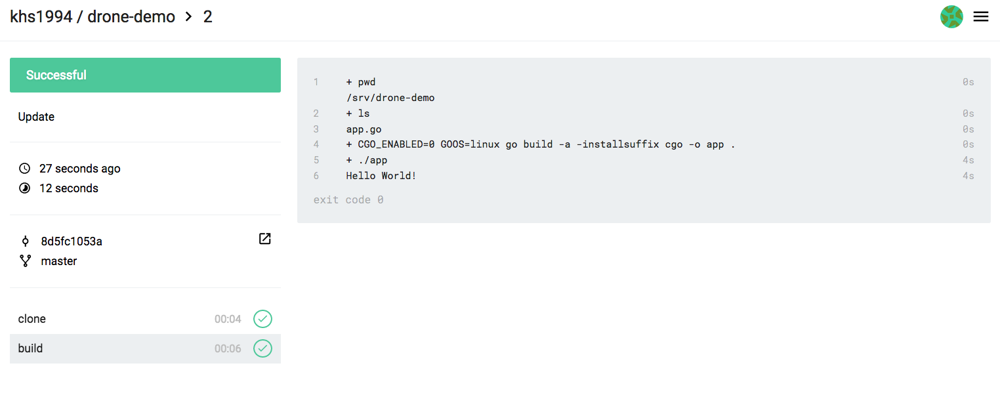

Drone
基于 Docker 的 CI/CD 工具 Drone 所有编译、测试的流程都在 Docker 容器中进行。
开发者只需在项目中包含 .drone.yml 文件，将代码推送到 git 仓库，Drone 就能够自动化的进行编译、测试、发布。
本小节以 GitHub + Drone 来演示 Drone 的工作流程。当然在实际开发过程中，你的代码也许不在 GitHub 托管，那么你可以尝试使用 Gogs + Drone 来进行 CI/CD。
Drone 关联项目
在 Github 新建一个名为 drone-demo 的仓库。
打开我们已经 部署好的 Drone 网站 或者 Drone Cloud，使用 GitHub 账号登录，在界面中关联刚刚新建的 drone-demo 仓库。
编写项目源代码
初始化一个 git 仓库
$ mkdir drone-demo
$ cd drone-demo
$ git init
$ git remote add origin git@github.com:username/drone-demo.git
这里以一个简单的 Go 程序为例，该程序输出 Hello World!
编写 app.go 文件
package main
import "fmt"
func main(){
fmt.Printf("Hello World!\n");
}
编写 .drone.yml 文件
kind: pipeline
type: docker
name: build
steps:
- name: build
image: golang:alpine
pull: if-not-exists # always never
environment:
KEY: VALUE
commands:
- echo $KEY
- pwd
- ls
- CGO_ENABLED=0 GOOS=linux go build -a -installsuffix cgo -o app .
- ./app
trigger:
branch:
- master
现在目录结构如下
.
├── .drone.yml
└── app.go
推送项目源代码到 GitHub
$ git add .
$ git commit -m "test drone ci"
$ git push origin master
查看项目构建过程及结果
打开我们部署好的 Drone 网站或者 Drone Cloud，即可看到构建结果。

当然我们也可以把构建结果上传到 GitHub，Docker Registry，云服务商提供的对象存储，或者生产环境中。
本书 GitBook 也使用 Drone 进行 CI/CD，具体配置信息请查看本书根目录 .drone.yml 文件。